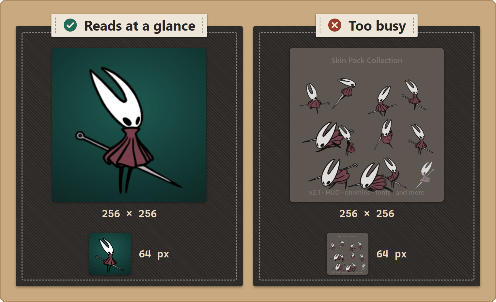
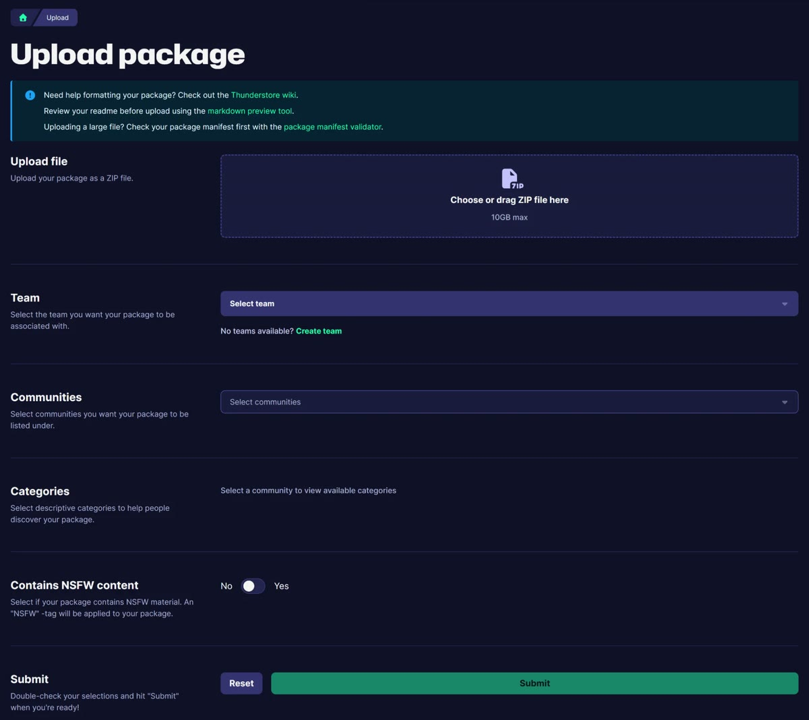

Distributing Your Pack
Ship · for creators.
Your pack is made and tested.
Package it as a Thunderstore zip, then publish it where Silksong players find their mods.
You'll be able to: assemble the files Thunderstore expects, write a correct manifest.json, and upload a pack that installs cleanly for everyone else.
Before you start
A publishable pack needs:
- Your asset files, in the standard folder structure, under a
Stitchwork/folder. manifest.json— Thunderstore's required metadata file.icon.png— exactly 256×256, the listing's display icon.README.md— what your pack does (Thunderstore renders it on the listing).- (optional) a
cover.png— the image on your pack's card in the Pack Manager (see Pack cover). - (optional) a
CHANGELOG.md, screenshots, and layered source files for remixers.
Test the pack from a clean install first — a separate game folder or profile — following your own README. The most common shipping bug is "works on my machine": your own game has other packs or settings that players do not have.
The package layout
Lay the pack out like this:
my-pack/
manifest.json
icon.png
README.md
CHANGELOG.md (optional)
Stitchwork/
pack.json (optional — your pack's Pack Manager name/author/version/description)
cover.png (optional — the image on your pack's card)
Sprites/
Spritesheets/
Sounds/
Text/
...Stitchwork reads your assets from the inner Stitchwork/ folder (a Patchwork/ folder also works). Everything else is Thunderstore's packaging metadata.
Put the three metadata files at the root of the zip, not inside a folder. This is the most common upload mistake. When you zip, select the contents of
my-pack/(themanifest.json,icon.png,README.md, and theStitchwork/folder), not themy-pack/folder itself.The mod manager installs your pack in a
plugins/TeamName-PackName/folder, deep inside a profile folder. Windows limits file paths to 260 characters. The game's longest asset names (Hornet CrestWeapon Scythe/is ~100 characters on its own) can cross that line when the install is nested too deep. Files then fail with a confusing "could not find a part of the path" error. Only the sprites with the longest names fail. An extra folder inside your zip adds 10–20 characters to each path. One extra folder is enough to stop the Reaper Crest animations from extracting.Dash Upper Recovery_WIP/ 000_…0008.png
pack.jsonvsmanifest.json— different files, different readers.manifest.jsonat the root is Thunderstore's (store listing, version, dependencies). The optionalpack.jsoninsideStitchwork/is Stitchwork's — it sets the name, author, version and description on your pack's card in the in-game Pack Manager, and it can name a cover image (Naming your pack). Ship both; Stitchwork never readsmanifest.json, and Thunderstore never readspack.json.Ship
pack.jsoneven when the folder name looks fine. Stitchwork uses its name and author to remember each player's on/off state, order and conditions for your pack. Without it, players lose those settings when a new version ships under a new folder name.
manifest.json
{
"name": "Hornet_Crystal_Variant",
"version_number": "1.0.0",
"website_url": "https://github.com/youruser/your-repo",
"description": "A crystalline reskin of Hornet's primary outfit.",
"dependencies": [
"<BepInEx pack identifier — copy from its Thunderstore page>",
"<Stitchwork identifier — copy from its Thunderstore page>"
]
}Field by field:
name— your pack's name. Letters, numbers, and underscores only (no spaces); it becomes part of the Thunderstore URL.version_number— semantic versionMAJOR.MINOR.PATCH, e.g.1.0.0. Thunderstore requires all three numbers, and you must bump it on every update (you can't re-upload the same version).website_url— a repo or social link. The key is required, but the value can be empty: use""if you have no link.description— one-line pitch, 250 characters max. Shown in listings.dependencies— the packages yours needs, each as the exact Thunderstore identifier inNamespace-Name-Versionform, where the namespace is the team name (for exampleTeamName-PackName-1.2.3). Always include the BepInEx pack and Stitchwork.
Copy dependency strings; don't type them. Open each dependency's Thunderstore page and copy its identifier verbatim — the namespace, exact name, and a version that actually exists. A wrong or non-existent version string makes your pack fail to install. Copy them again when you update. (If you're targeting a Stitchwork build that isn't on Thunderstore yet, follow that release's own install notes for how players should get it.)
icon.png
- Exactly 256×256 px. Thunderstore rejects other sizes.
- PNG, with or without alpha.
- It should read at a glance — signature character, before/after, a recognisable silhouette. It's how people spot your pack in a long list.

Pack cover
The cover is the image on your pack's card in the in-game Pack Manager. Thunderstore doesn't use it. It's optional; without one, the card shows a plain dark plate.
- Put a
cover.pngin your pack'sStitchwork/folder, besidepack.json. Or name another file inpack.json, for example"cover": "art/banner.png". Acover.pngbeside the package'smanifest.jsonworks too. - PNG or JPG (a JPG needs the
"cover"field). 1280 × 400 is the best size. - The card crops the image to fill it. A dark shade covers the left half, behind the text, and fades out toward the right. Put the important part of the image in the right third.
- The
"cover"path must stay inside the pack. Use/between folders. - After you change the cover, click Rescan in the Pack Manager to see the new image.
README.md
Thunderstore shows this file on your pack's page. Include:
- A one-line summary up top.
- Screenshots — before/after if it's visual.
- What it changes, specifically ("Hornet's idle and run animations", not "Hornet's appearance").
- What it doesn't change — sets expectations.
- Compatibility — does it work alongside other packs? Any known conflicts? (See Priority & Conflicts for how overlaps resolve.)
- Known issues or limitations.
- Credits, if you remixed someone else's work.

little bomey @everydruidwaswr · Oct 28, 2019
*pointing to wallet* No stealie!
Check before you publish
Click the Check this pack button (the stethoscope) in the bar at the bottom of your pack's card. The Pack Doctor reads the pack's files, writes a report and opens it. It finds the mistakes that fail without a message, for example:
- content nested one folder too deep (a zip inside a zip),
- a top folder with the wrong case, such as
sprites/forSprites/(it works on Windows and fails on Linux and Steam Deck), - no
pack.json, - a font file directly under
Fonts/, - an old
Recolour/folder (rename it toRecolor/), - leftover
_WIPfolders, an oldanchors.txt, or aDumps/folder.
Fix what it finds, then check again.
Clean the sprite edges
Clip Studio Paint saves white under the transparent pixels of a PNG, and the game shows that white as white specks around the edges of the art. The Pack Doctor finds PNGs with this problem. After the check, the Pack Manager offers to clean the files, and it backs up each file first ("Light sprite edges" in The Pack Manager). Clean the files before you ship. The Clean sprite edges (CSP fix) setting hides the specks only in the game of a player who keeps it on; a cleaned file fixes them for every player. Troubleshooting explains the cause in simple steps.
Zip and publish
- Confirm the layout above, with the three metadata files at the package root.
- Select the contents of your pack folder and compress them to a
.zip. The zip's filename does not matter. - Sign in to Thunderstore and open the Hollow Knight: Silksong community.
- Open the Upload page.
- Choose your zip, or drag it onto the form.
- Under Communities, pick Hollow Knight: Silksong.
- Under the team field, pick your team. If you have no team, click Create team.
- Pick the categories, and set the NSFW switch.
- Submit. Thunderstore then lists your pack.
The name, the version and the description come from manifest.json.

The great gate heard my song and, in its infinite and ancient kindness, has opened the way forward for us!
Wanderers · SHERMA_BONEGATE_OPENED
Updating a published pack
- Increase
version_numberinmanifest.json. - Re-zip with the new contents.
- Upload it as a new version — Thunderstore keeps the history.
- Note what changed in
CHANGELOG.md, so players know why to update.
Good habits
- Keep updates incremental. Small, focused versions are easier for players to adopt and easier for you to debug than a sweeping "2.0 changes everything".
- State your conflicts. If your pack obviously clashes with another popular one (you both reskin the same character), say so in the README. It saves everyone confusion — and the conflict rules explain what actually happens when two packs overlap.
- Don't bloat the download with sources. Ship
.psd/.kra/.asefiles in a separate "source" zip if you want to share them, not in the main package. - Re-test from clean before every release, not just the first.
Next
- How your pack behaves next to others → Priority & Conflicts